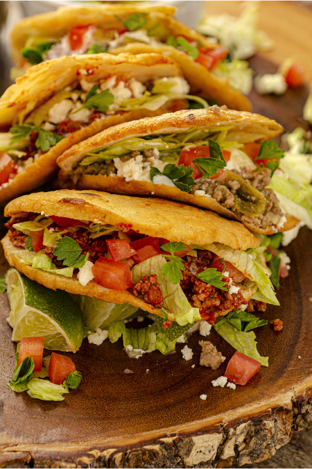

-
Most popular selection
Authentic Delicious Buko Pie
A Filipino classic filled with tender young coconut and a creamy custard. The buttery, flaky crust holds a sweet tropical filling. Every bite is a delightful balance of smooth and refreshing.
₱ 130
-

All Time Classic
Authentic Delicious Coconut Flan
A silky smooth flan infused with rich coconut flavor, topped with a luscious caramelized glaze. Each spoonful is creamy and decadent. A sweet, tropical twist on a classic dessert.
₱ 200 -
Exclusive Dish
Authentic Delicious Turon
Sweet, ripe banana wrapped in crispy spring roll wrappers and caramelized to perfection. Every bite is crunchy on the outside and soft and sweet inside. A Filipino favorite that's both simple and delicious.
₱ 159
-
Best with a Partner
Authentic Delicious Churros
Golden, crispy dough sticks coated in cinnamon sugar and perfect for dipping. Soft on the inside with a crunchy exterior. Pair with chocolate sauce for the ultimate treat.
₱ 300
-
Signature Choice
Authentic Delicious Buchi
Crispy, deep-fried rice flour balls filled with sweet red bean paste or sesame. The chewy outer shell gives way to a soft, sweet center. A bite-sized, addictive delight.
₱ 159
-
Universal Favorite
Authentic Delicious Concha Pan
Soft, pillowy Mexican bread with a sweet, crunchy sugar topping. Its light, fluffy texture and mild sweetness make it the perfect treat. Enjoy it with coffee or as a snack on its own.
₱ 250